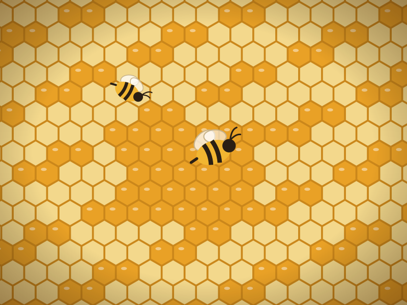

Why honey
A spoonful of something genuinely good.
Honey has been part of Indian kitchens and home remedies for thousands of years. Here is what it actually offers, in plain language — and how to get the most from your jar.
Natural energy
Honey is carbohydrate the body can use quickly, which is why athletes, farmers and school children have long reached for a spoonful before a long morning.
Antioxidants
Raw honey naturally contains flavonoids and phenolic compounds. Darker honeys such as our വൻതേൻ generally carry more of them than pale, light varieties.
Soothes a sore throat
This is honey's best-supported everyday use. A spoonful, plain or in warm water, coats the throat and can ease a night-time cough in adults and children over one year.
Kind to skin
Honey holds moisture and has long been used in home face packs and on minor grazes. Many people simply mix a little with curd or gram flour for a weekly mask.
Gentle on digestion
In Ayurveda honey is valued as a carrier taken with warm water, ginger or lemon. Many households keep a jar simply because it sits easily after a heavy meal.
Real flavour, real source
Because ours is raw and single-source, you taste what was flowering when the bees worked. It's food with a season and a place, not a uniform product.
Everyday use
Simple ways to enjoy it
- 1
A spoon in the morning
Plain, or stirred into warm (not boiling) water with a squeeze of lemon.
- 2
In tea and milk
Let the drink cool a little first, so the honey keeps its aroma.
- 3
On toast, dosa or curd
Our deep amber honey stands up well to strong flavours.
- 4
For a scratchy throat
A teaspoon on its own, or in warm water with ginger, at bedtime.
- 5
In the kitchen
In marinades, dressings and baking, wherever you want depth as well as sweetness.

Good to know
Getting the best from your jar
Store it simply
Room temperature, lid closed, out of direct sunlight. No refrigeration needed.
Use a dry spoon
Water in the jar is the one thing that can spoil honey. Keep the spoon clean and dry.
If it sets
Stand the closed jar in warm water for 15–20 minutes. Avoid the microwave and boiling water.
It keeps well
Stored properly, honey lasts a very long time. Colour may deepen over months — that is normal.
Please read: this page is general information about a food, not medical advice, and honey is not a treatment for any illness.
Never give honey to a baby under 12 months old — it carries a small risk of infant botulism. If you live with diabetes, are pregnant, or are managing a health condition, speak to your doctor about how honey fits your diet. Honey is still a sweet food, so enjoy it in sensible amounts.
Ready to taste the difference?
വൻതേൻ · Apis cerana indica (ഞൊടിയൻ), in 250 g, 500 g and 1 kg.